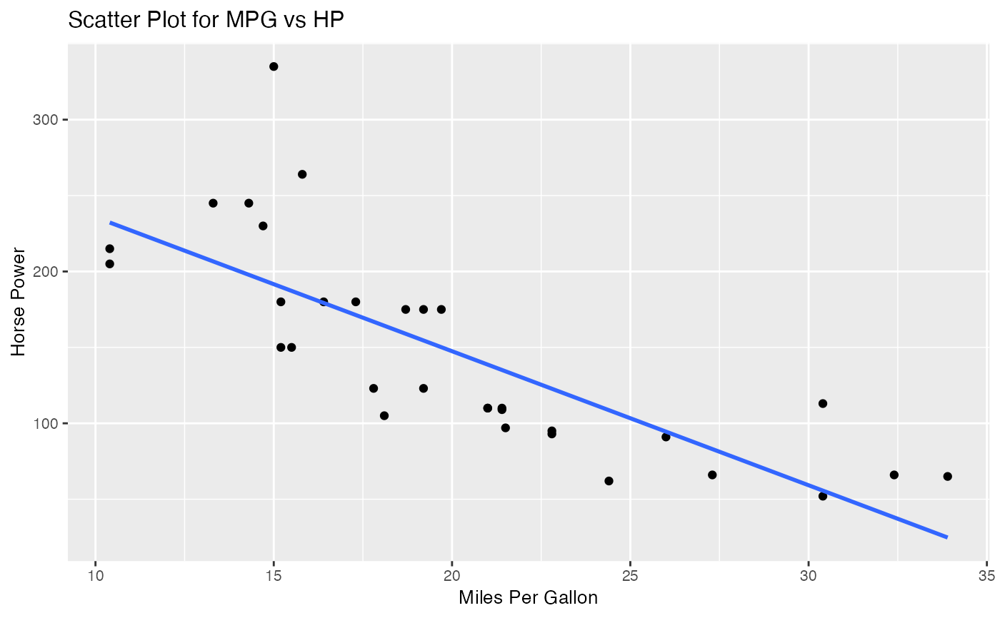

scatter_plot.RdCreates a scatter plot using two variables in data frame
scatter_plot(data, var1, var2, xlab, ylab, title, text_size, type = NULL)A data frame
the variable x in the relationship
the variable y in the relationship
the label of the x-axis
the label of the y-axis
the title of the scatter plot with the regression line
the size of text of the labels/title
specify whether the model is linear with "lm" or k-nn with "knn" (default value = NULL)
A scatter plot where The x-axis are for the x variable specified The y-axis are for the y variable specified
This function takes in a data set, a variable x from the data set, a variable y from the data set, an x-axis label, a y-axis label, a title for the plot, the text size, and the model type (optional).
scatter_plot(mtcars, mpg, hp, "Miles Per Gallon", "Horse Power",
"Scatter Plot for MPG vs HP", 10, "lm")
#> `geom_smooth()` using formula = 'y ~ x'
